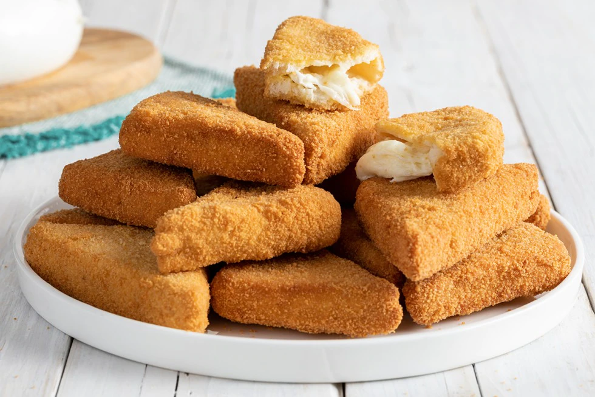

MOZZARELLA IN CARROZZA

DESCRIPTION
Typical appetizer of Neapolitan cuisine.
If mozzarella is one of your favorite food, then you chose the right dish
INGREDIENTS
- flour
- 5 eggs
- 12 slices of white bread
- breadcrumbs
- 1 buffalo mozzarella of 250g
- groundnut oil for frying
- a pinch of salt